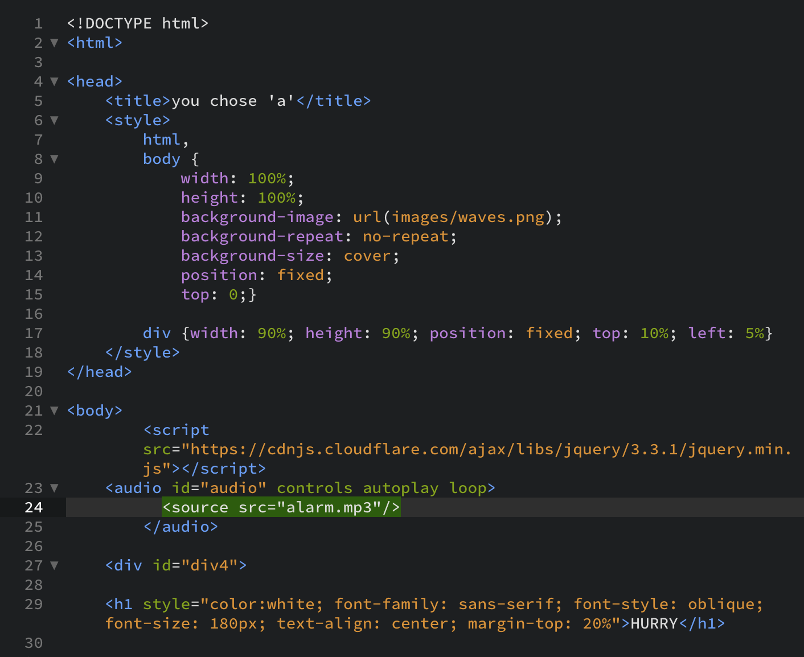

net.art series
Procedural Section
Page 1

To start my process, I began setting up my html documents by using a template with the basics of <head> and <style> already in the document so I could save time.
From there I would start adding in links that were ready to use and saved in my root folder.